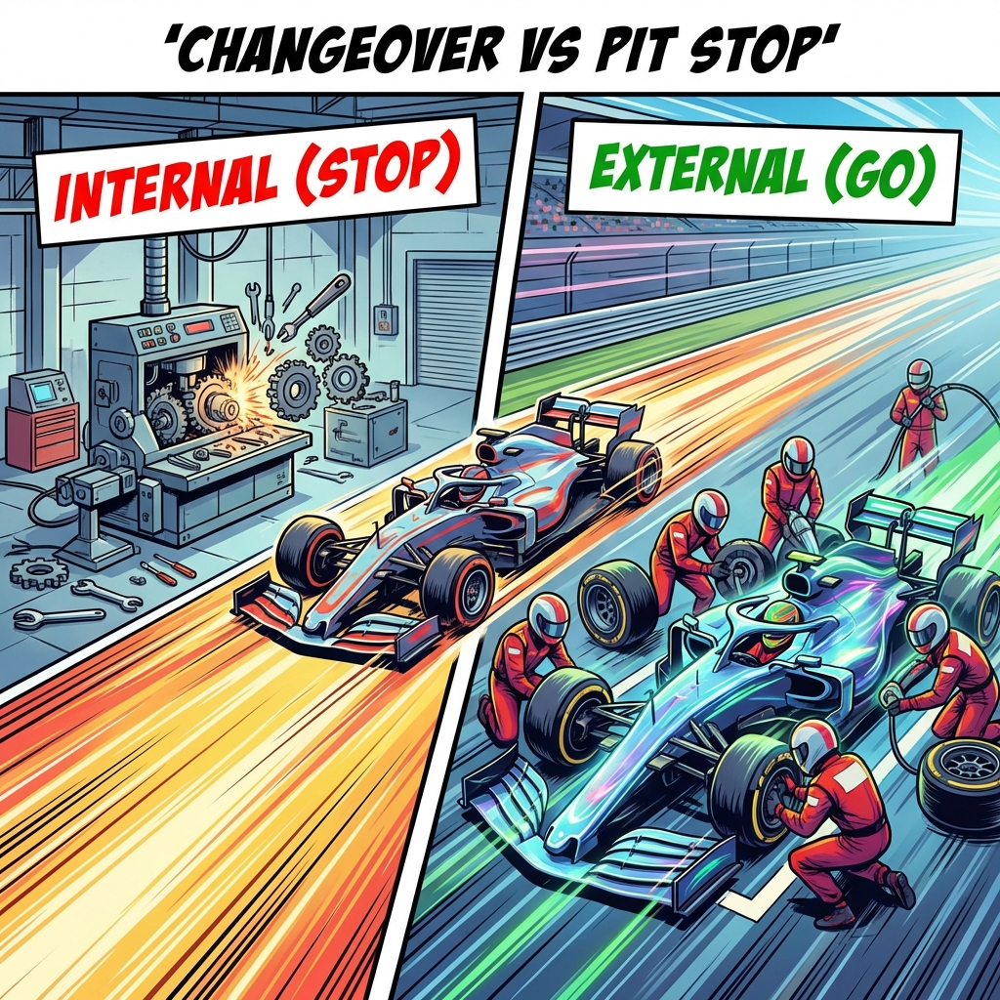

Vetted Safe | Continuous Improvement Series
"To reduce changeover time by separating 'Internal' work (Machine Stopped) from 'External' work (Machine Running)."

In 1950, a pit stop took 60 seconds. Today, it takes 2 seconds. How? Preparation.